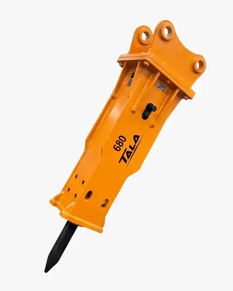

Tavo El Importador · Barranquilla
Excavadora CAT 305.5E2 Año 2018 4.700 horas reales
Antes $205.000.000
Ahora$190.000.000
Ahorra $15.000.000
[¿Incluye IVA o es + IVA? Dato pendiente de Tavo]
Véala funcionando
Arranque en frío, brazo, giro y oruga.
Qué incluye
Garra incluida · valor aprox. $7.000.000
Línea húmeda instalada · lista para martillo
Cuchilla y balde estándar
GPS instalado
Aire acondicionado
Documentos al día
Garantía de 3 meses · motor y sistema hidráulico

Combo con martillo
Llévela lista para romper.
Si compra la excavadora, se lleva el martillo hidráulico TALA 680 con descuento.
Antes $13.900.000
Ahora$10.900.000
Ahorra $3.000.000
[¿Incluye IVA o es + IVA? Dato pendiente de Tavo]


Datos rápidos

- Peso operativo
- 5,38 toneladas
- Profundidad de excavación
- 3,47 m
- Alcance máximo
- 5,63 m
- Motor
- Caterpillar
Preguntas frecuentes
¿Las horas son reales?
Sí, 4.700 horas verificadas. Le mostramos el horómetro por video.
¿Tiene papeles?
Sí, documentos al día.
¿Puedo verla antes de comprar?
Sí, en Barranquilla o por videollamada en vivo.
¿Tiene garantía?
Sí, 3 meses en motor y sistema hidráulico.
¿Me la envían?
[Ciudades y costo del envío. Dato pendiente de Tavo]
¿Cómo pago?
[Formas de pago, con o sin factura. Dato pendiente de Tavo]
¿Le puedo poner martillo?
Sí, ya tiene línea húmeda instalada. Pregunte por el combo con descuento.
Quién vende

Tavo El Importador
- Barranquilla, Atlántico
- NIT [dato pendiente]
- 313 676 3895
[Frase corta del cliente 1]
[Frase corta del cliente 2]
[Frase corta del cliente 3]
Unidad única
Es la única unidad. Escríbanos antes de que se venda.
CAT 305.5E2 · 2018 · 4.700 horas · $190.000.000